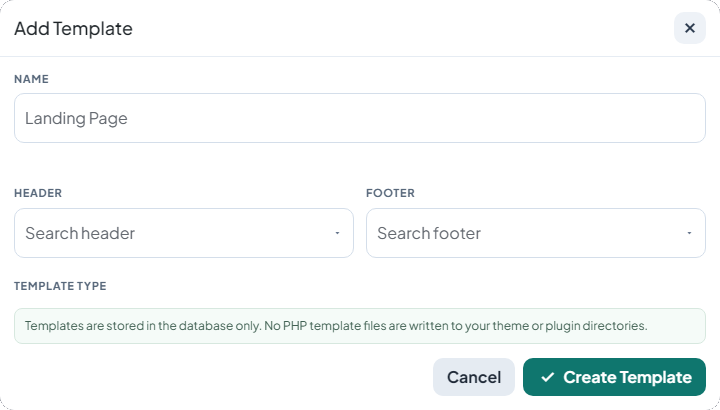

AnyPage Header Footer for Elementor.
A plugin I built to let site owners create reusable templates, then assign custom headers and footers per page from one centralized admin screen.
Flexible Page Layouts Without Theme Lock-In.
Many WordPress sites need different page-level header/footer combinations, but theme-based solutions are often rigid or expensive to maintain.
This plugin introduces a simple workflow: define template records in the dashboard, select header and footer sources, then assign that template on individual pages.
Centralized Templates
Manage all template definitions from one admin interface.
Smart Source Selection
Filter header/footer sources from Elementor templates or WP content.
Safe Fallbacks
If no custom source is found, the theme default remains intact.
Database-Only Storage
No generated template files, which keeps updates safer and cleaner.

How It Works in Practice
- Create a template record from the plugin dashboard.
- Select header and footer sources from available content.
- Assign the template to any page from Page Attributes.
- Track usage and maintain consistency across public post types.
Faster Template Operations for WordPress Teams.
The plugin reduces template-management friction and makes page-level layout control accessible for editors and site administrators while preserving default theme behavior as a safety net.